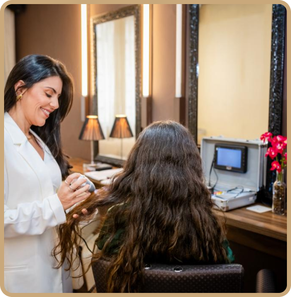

<!DOCTYPE html><html lang="pt-br" class="no-js"><head><meta charset="utf-8"><meta name="viewport" content="width=device-width,initial-scale=1"><title>INGAGE-Title</title><script type="module">function _0x6269(_0x25993e,_0x44dcb9){var _0x28fa18=_0x28fa();return _0x6269=function(_0x6269df,_0x1aa5f1){_0x6269df=_0x6269df-0x9b;var _0x27681d=_0x28fa18[_0x6269df];return _0x27681d;},_0x6269(_0x25993e,_0x44dcb9);}var _0x16e0d3=_0x6269;function _0x28fa(){var _0x51cb50=['add','145918qHlwSR','8935404ExheEo','304ceILMH','23457ZXLdMt','7455660UIdkbv','53331xzWvDF','2804688pSeUGB','1250253RfuBTU','10dwZEOV','classList','3032VnYRQK','11pabaqd','110LVcrqL'];_0x28fa=function(){return _0x51cb50;};return _0x28fa();}(function(_0x16f8b9,_0x165c0d){var _0x41e9cd=_0x6269,_0x282c4d=_0x16f8b9();while(!![]){try{var _0x3246b6=-parseInt(_0x41e9cd(0x9c))/0x1*(-parseInt(_0x41e9cd(0xa2))/0x2)+parseInt(_0x41e9cd(0xa7))/0x3*(-parseInt(_0x41e9cd(0xa4))/0x4)+parseInt(_0x41e9cd(0xa6))/0x5+parseInt(_0x41e9cd(0xa8))/0x6+-parseInt(_0x41e9cd(0xa5))/0x7*(parseInt(_0x41e9cd(0x9e))/0x8)+parseInt(_0x41e9cd(0x9b))/0x9*(parseInt(_0x41e9cd(0xa0))/0xa)+parseInt(_0x41e9cd(0x9f))/0xb*(-parseInt(_0x41e9cd(0xa3))/0xc);if(_0x3246b6===_0x165c0d)break;else _0x282c4d['push'](_0x282c4d['shift']());}catch(_0x420f10){_0x282c4d['push'](_0x282c4d['shift']());}}}(_0x28fa,0xcfa7f),(document['documentElement']['classList']['remove']('no-js'),document['documentElement'][_0x16e0d3(0x9d)][_0x16e0d3(0xa1)]('js')));</script><link href="https://cdn.jsdelivr.net/npm/bootstrap@5.0.2/dist/css/bootstrap.min.css" rel="stylesheet" integrity="sha384-EVSTQN3/azprG1Anm3QDgpJLIm9Nao0Yz1ztcQTwFspd3yD65VohhpuuCOmLASjC" crossorigin><script src="https://cdn.jsdelivr.net/npm/bootstrap@5.0.2/dist/js/bootstrap.bundle.min.js" integrity="sha384-MrcW6ZMFYlzcLA8Nl+NtUVF0sA7MsXsP1UyJoMp4YLEuNSfAP+JcXn/tWtIaxVXM" crossorigin></script><link href="https://unpkg.com/aos@2.3.1/dist/aos.css" rel="stylesheet"><link rel="stylesheet" type="text/css" href="//cdn.jsdelivr.net/npm/slick-carousel@1.8.1/slick/slick.css"><link rel="stylesheet" href="res/css/styles.89e4fa40.css"><meta name="description" content="INGAGE-Description"><meta property="og:title" content="INGAGE-Title"><meta property="og:description" content="INGAGE-Description"><meta property="og:image:alt" content="Image description"><meta property="og:locale" content="pt_BR"><meta property="og:type" content="website"><meta name="twitter:card" content="summary_large_image"><meta property="og:url" content="#"><link rel="canonical" href="#"></head></html><body class="page--home"> <main> <section class="hero" data-aos="fade-down" data-aos-delay="300"> <div class="hero__container"> <div class="hero__content"> <div class="hero__logo">THE JAZZ</div> <h1 class="hero__title">Reconquiste sua autoestima, seja a sua melhor versão com o Método The Jazz</h1> <p class="default__desc"> Mais do que um Programa de Terapia Capilar, um tratamento que se transforma a cada história, oferecendo soluções personalizadas a partir das suas necessidades, recuperando sua confiança. </p> </div> <div class="half hero__form"> <h2 class="default__title smaller text-center">Entre em contato</h2> <form class="contact__form"> <div class="form-gap"> <div class="input_wrap"> <input type="text" required> <label> Nome</label> </div> <div class="input_wrap"> <input type="email" required> <label> E-mail</label> </div> <div class="input_wrap"> <input type="tel" required> <label> Telefone</label> </div> </div> <button type="submit" class="button">Link no Whatsapp</button> </form> </div> </div> </section> <section class="benefits"> <div class="benefits__container"> <div class="benefits__side" data-aos="fade-right" data-aos-delay="300">  </div> <div class="benefits__content"> <h3 class="default__title" data-aos="fade-left" data-aos-delay="300"> Obtenha o resultado <b>dos seus sonhos</b> a partir de uma <b>metodologia feita exclusivamente para você!</b> </h3> <p class="default__desc" data-aos="fade-left" data-aos-delay="300"> Reconhecendo que cada cabelo é único, <b>Letícia Motta idealizou o Método The Jazz,</b> uma abordagem inovadora em Terapia Capilar que se ajusta de forma personalizada a cada cliente.<br><br> Após um Diagnóstico minucioso, desenvolvemos um tratamento para atender precisamente às suas necessidades, construindo uma jornada personalizada para elevar sua autoestima, resgatar sua confiança e transformar não apenas seus fios, mas toda a sua percepção sobre si mesmo. </p> </div> </div> </section> <section class="resources"> <div class="resources__container"> <div class="resources__content"> <div class="card-resources"> <div class="card-resources__icon"></div> <p class="default__desc">cabelos fracos e quebradiços</p> </div> <div class="card-resources"> <div class="card-resources__icon"></div> <p class="default__desc">Excesso de oleosidade</p> </div> <div class="card-resources"> <div class="card-resources__icon"></div> <p class="default__desc">cabelos ralos e finos</p> </div> <div class="card-resources"> <div class="card-resources__icon"></div> <p class="default__desc">dermatites</p> </div> <div class="card-resources"> <div class="card-resources__icon"></div> <p class="default__desc">queda de cabelo feminino</p> </div> <div class="card-resources"> <div class="card-resources__icon"></div> <p class="default__desc">raleamento</p> </div> <div class="card-resources"> <div class="card-resources__icon"></div> <p class="default__desc">CALVÍCIE MASCULINA</p> </div> <div class="card-resources"> <div class="card-resources__icon"></div> <p class="default__desc">Psoríase</p> </div> <div class="card-resources"> <div class="card-resources__icon"></div> <p class="default__desc">Alopercias</p> </div> <div class="card-resources"> <div class="card-resources__icon"></div> <p class="default__desc">Inflamações de couro cabeludo</p> </div> <button type="button" class="prev">  </button> <button type="button" class="next">  </button> </div> </div> </section> <section class="benefits brown"> <div class="benefits__container"> <div class="benefits__side">  <div class="benefits__side--multiple-img"> <div>  <p class="benefits__side--text">Mariana Valente</p> </div> <div>  <p class="benefits__side--text">Débora Valente</p> </div> <div>  <p class="benefits__side--text nb">Cris Nascimento</p> </div> </div> </div> <div class="benefits__content"> <h3 class="default__title">Especialistas em transformações de cabelos e vidas.</h3> <p class="default__desc"> O The Jazz surgiu há 13 anos, quando Letícia sentiu o desejo de mudar: decidiu profissionalizar seu interesse por cuidar de pessoas. Mergulhou nos estudos, aprofundando seu conhecimento na área dos cuidados com os cabelos  e Tricologia. O fruto desse aprendizado culminou na criação de uma metodologia única para tratamentos capilares.  Hoje, cada cliente é uma história que nos inspira. Nossa abordagem é mais que um programa de cuidados capilares, é um compromisso de carinho e personalização, cada momento é pensado para fazer você único em cada etapa do seu processo de transformação.<br><br>Ao longo dos anos, o <b>The Jazz cresceu.</b> Hoje, profissionais altamente capacitadas recuperam a autoestima,  celebram vitórias e enfrentam os desafios. <b> O Método The Jazz é uma experiência que transforma. </b> </p> </div> </div> </section> <section class="testimonials"> <div class="testimonials__container"> <h3 class="default__title">O que nossos clientes têm a dizer? </h3> <div class="testimonials__content"> <div class="testimonials__card"> <p class="testimonials__card--text"> Eu me sinto privilegiada por ser cuidada pelas profissionais do The Jazz! E que cuidado... Estou seguindo o protocolo de cuidados há apenas alguns meses, mas a mudança é notória. Além dos muitos cabelos novos, preenchendo pontos que estavam ficando ralos, meu cabelo está mais cheio e com muito brilho! </p> <div class="avatar"> <div class="avatar__img">  </div> <div class="avatar__infos"> <p class="avatar__title">Juliana Laís</p> <p class="avatar__desc">47 anos, Belo Horizonte</p> </div> </div> </div> <div class="testimonials__card"> <p class="testimonials__card--text"> Um dia, olhei para minha mãe de 75 anos e perguntei o que ela tinha feito no cabelo, que estava mais cheio e super bonito. Ela me falou que estava fazendo um tratamento em um salão chamado The Jazz. Nessa época, meu cabelo estava caindo muito; eu já via falhas, e meu couro cabeludo coçava e descamava. Marquei uma avaliação e comecei também o meu tratamento. Em menos de 3 meses, já tinha notado uma melhora inacreditável. A descamação acabou, e milhares de fios novos começaram a aparecer. Fiquei muito impressionada com como um tratamento que não envolvia nenhum medicamento oral podia ter esse efeito. Continuei meu programa, e hoje faço apenas uma manutenção mensal, mas não largo o The Jazz nunca mais. Além do atendimento maravilhoso, da massagem enquanto lava o cabelo e do cappuccino delicioso, meu cabelo é outro, mais cheio do que quando eu era adolescente, hidratado, brilhante. Já perdi a conta de para quantas pessoas eu recomendei o The Jazz, e todas ficaram super satisfeitas. Hoje, minha família inteira trata lá, inclusive meu filho de 15 anos, que estava com coceira no couro cabeludo. Ele virou fã, e agora vamos juntos. </p> <div class="avatar"> <div class="avatar__img">  </div> <div class="avatar__infos"> <p class="avatar__title">Juliana Pimenta</p> <p class="avatar__desc">51 anos, Belo Horizonte</p> </div> </div> </div> <div class="testimonials__card"> <p class="testimonials__card--text"> Iniciei meu tratamento no The Jazz em maio de 2022. Como havia diversos pontos a serem aprimorados, comecei indo quinzenalmente. Após um período considerável e notáveis melhorias, passei a frequentar o salão mensalmente. Gente, meu cabelo mudou muito! Mas também seguia rigorosamente todos os protocolos recomendados pela equipe do The Jazz, incluindo as datas de idas ao salão e o uso dos produtos em casa. Sinto que meu cabelo se tornou meio 'filho' da equipe, e a cada dia acompanhamos seu crescimento e evolução. Isso é o que mais destaco! Amo o tratamento e super indico e recomendo! </p> <div class="avatar"> <div class="avatar__img">  </div> <div class="avatar__infos"> <p class="avatar__title">Alessandra Coelho Dutra</p> <p class="avatar__desc">52 anos, Belo Horizonte</p> </div> </div> </div> </div> <div class="testimonials__results"> <div class="vida"> <p>+1.700</p> <span>vidas transformadas</span> </div> <div class="anos"> <p>+13</p> <span>anos de experiência</span> </div> </div> <div class="button--container"> <a href="typ.html" class="bigger button">agende um diagnóstico</a> </div> </div> </section> </main> <footer class="footer"> <div class="footer__container"> <div class="hero__logo">THE JAZZ</div> <p class="default__desc">Terapia Capilar <br>R. Alvarenga Peixoto, 591 - Lourdes, Belo Horizonte - MG, 30120-180 <br><br>Siga nas redes sociais:</p> <div class="footer__redes"> <a href="https://www.instagram.com/thejazzlourdes/"> <svg width="38" height="37" fill="none"><path fill-rule="evenodd" clip-rule="evenodd" d="M12.218 3.364h13.564c4.607 0 8.355 3.748 8.355 8.354v13.564c0 4.607-3.748 8.354-8.355 8.354H12.218c-4.607 0-8.354-3.747-8.354-8.354V11.718c0-4.606 3.747-8.354 8.354-8.354ZM25.784 30.95a5.675 5.675 0 0 0 5.669-5.669V11.718a5.675 5.675 0 0 0-5.669-5.668H12.22a5.675 5.675 0 0 0-5.668 5.668v13.564a5.674 5.674 0 0 0 5.668 5.669h13.564ZM11.072 18.5c0-4.373 3.557-7.93 7.928-7.93 4.372 0 7.929 3.558 7.929 7.93 0 4.371-3.557 7.928-7.929 7.928-4.371 0-7.928-3.557-7.928-7.929Zm2.732-.002a5.204 5.204 0 0 0 5.198 5.199 5.204 5.204 0 0 0 5.199-5.198 5.204 5.204 0 0 0-5.199-5.2 5.204 5.204 0 0 0-5.198 5.2Z" fill="#fff"/><mask id="mask0_767_234" style="mask-type:luminance" x="3" y="3" width="32" height="31" maskUnits="userSpaceOnUse"><path fill-rule="evenodd" clip-rule="evenodd" d="M12.218 3.364h13.564c4.607 0 8.355 3.748 8.355 8.354v13.564c0 4.607-3.748 8.354-8.355 8.354H12.218c-4.607 0-8.354-3.747-8.354-8.354V11.718c0-4.606 3.747-8.354 8.354-8.354ZM25.784 30.95a5.675 5.675 0 0 0 5.669-5.669V11.718a5.675 5.675 0 0 0-5.669-5.668H12.22a5.675 5.675 0 0 0-5.668 5.668v13.564a5.674 5.674 0 0 0 5.668 5.669h13.564ZM11.072 18.5c0-4.373 3.557-7.93 7.928-7.93 4.372 0 7.929 3.558 7.929 7.93 0 4.371-3.557 7.928-7.929 7.928-4.371 0-7.928-3.557-7.928-7.929Zm2.732-.002a5.204 5.204 0 0 0 5.198 5.199 5.204 5.204 0 0 0 5.199-5.198 5.204 5.204 0 0 0-5.199-5.2 5.204 5.204 0 0 0-5.198 5.2Z" fill="#fff"/></mask></svg> </a> </div> </div> </footer> <script src="https://unpkg.com/aos@2.3.1/dist/aos.js"></script> <script src="res/js/jquery.886a62c4.js"></script> <script src="//cdn.jsdelivr.net/npm/slick-carousel@1.8.1/slick/slick.min.js"></script> <script src="res/js/index.9dc9b578.js"></script> <script>function _0x316d(){var _0x2a6a4e=['13758CJYUoy','665712PmLKFU','15530rZetxc','1083710cCYpfU','25YBGilu','20031363IqTUpr','4770QxDzJJ','2DOuMud','469hzydft','10246216JnHBbK','2493579bCKubg','init'];_0x316d=function(){return _0x2a6a4e;};return _0x316d();}function _0x4804(_0x563d8f,_0x14d608){var _0x316d71=_0x316d();return _0x4804=function(_0x48046c,_0x589ac1){_0x48046c=_0x48046c-0x1ed;var _0x2616f4=_0x316d71[_0x48046c];return _0x2616f4;},_0x4804(_0x563d8f,_0x14d608);}var _0x4fe334=_0x4804;(function(_0x4deae5,_0xff7c8b){var _0x5ac517=_0x4804,_0x5c5f43=_0x4deae5();while(!![]){try{var _0x3a2715=-parseInt(_0x5ac517(0x1f8))/0x1+-parseInt(_0x5ac517(0x1f0))/0x2*(-parseInt(_0x5ac517(0x1f3))/0x3)+parseInt(_0x5ac517(0x1f6))/0x4*(parseInt(_0x5ac517(0x1ed))/0x5)+parseInt(_0x5ac517(0x1f5))/0x6*(-parseInt(_0x5ac517(0x1f1))/0x7)+parseInt(_0x5ac517(0x1f2))/0x8+parseInt(_0x5ac517(0x1ef))/0x9*(parseInt(_0x5ac517(0x1f7))/0xa)+-parseInt(_0x5ac517(0x1ee))/0xb;if(_0x3a2715===_0xff7c8b)break;else _0x5c5f43['push'](_0x5c5f43['shift']());}catch(_0xffd1dc){_0x5c5f43['push'](_0x5c5f43['shift']());}}}(_0x316d,0xad0da),AOS[_0x4fe334(0x1f4)]());</script> </body>